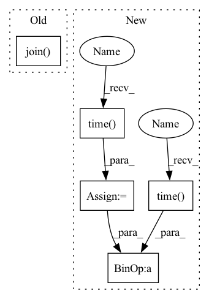

Pattern ID :11074

Before Change
check_file(os.path.join(third_party_path, "onnx", "CMakeLists.txt"))
check_file(os.path.join(third_party_path, "foxi", "CMakeLists.txt"))
check_file(os.path.join(third_party_path, "QNNPACK", "CMakeLists.txt"))
check_file(os.path.join(third_party_path, "fbgemm", "CMakeLists.txt"))
check_file(os.path.join(third_party_path, "fbgemm", "third_party",
"asmjit", "CMakeLists.txt"))
check_file(os.path.join(third_party_path, "onnx", "third_party",
After Change
if all(not_exists_or_empty(folder) for folder in folders):
try:
print(" --- Trying to initialize submodules")
start = time.time()
subprocess.check_call(["git", "submodule", "update", "--init", "--recursive"], cwd=cwd)
end = time.time()
print(" --- Submodule initialization took {:.2f} sec".format(end - start))
except Exception:
print(" --- Submodule initalization failed")
print("Please run:\n\tgit submodule update --init --recursive")
In pattern: SUPERPATTERN
Frequency: 3
Non-data size: 5
Instances
Fragment ID: 38147524
Project Name: pytorch/pytorch
Commit Name: 7e6a84d2387e1693365f8650d9990c8adc4c7bf4
Time: 2021-03-09
Author: nshulga@fb.com
File Name: setup.py
M Class Name: AnonimousClass
N Class Name: AnonimousClass
M Method Name: check_submodules(0)
N Method Name: check_submodules(0)
M Parent Class:
N Parent Class:
M File Name: setup.py
N File Name: setup.py
M Start Line: 309
M End Line: 319
N Start Line: 324
N End Line: 344
'>
Before Change
check_file(os.path.join(third_party_path, "onnx", "CMakeLists.txt"))
check_file(os.path.join(third_party_path, "foxi", "CMakeLists.txt"))
check_file(os.path.join(third_party_path, "QNNPACK", "CMakeLists.txt"))
check_file(os.path.join(third_party_path, "fbgemm", "CMakeLists.txt"))
check_file(os.path.join(third_party_path, "fbgemm", "third_party",
"asmjit", "CMakeLists.txt"))
check_file(os.path.join(third_party_path, "onnx", "third_party",
After Change
if all(not_exists_or_empty(folder) for folder in folders):
try:
print(" --- Trying to initialize submodules")
start = time.time()
subprocess.check_call(["git", "submodule", "update", "--init", "--recursive"], cwd=cwd)
end = time.time()
print(" --- Submodule initialization took {:.2f} sec".format(end - start))
except Exception:
print(" --- Submodule initalization failed")
print("Please run:\n\tgit submodule update --init --recursive")
'>
Fragment ID: 38147525
Project Name: pytorch/pytorch
Commit Name: 7e6a84d2387e1693365f8650d9990c8adc4c7bf4
Time: 2021-03-09
Author: nshulga@fb.com
File Name: setup.py
M Class Name: AnonimousClass
N Class Name: AnonimousClass
M Method Name: check_submodules(0)
N Method Name: check_submodules(0)
M Parent Class:
N Parent Class:
M File Name: setup.py
N File Name: setup.py
M Start Line: 309
M End Line: 319
N Start Line: 324
N End Line: 344
'>
Before Change
log_dir = os.path.join(args.experiment_dir, "logs")
train_dataset = DatasetFromObj(os.path.join(data_dir, "train.obj"), augment=True, bold=True, rotate=True, blur=True)
val_dataset = DatasetFromObj(os.path.join(data_dir, "val.obj"))
dataloader = DataLoader(train_dataset, batch_size=args.batch_size, shuffle=True)
model = Zi2ZiModel(embedding_num=args.embedding_num, embedding_dim=args.embedding_dim,
After Change
checkpoint_dir = os.path.join(args.experiment_dir, "checkpoint")
sample_dir = os.path.join(args.experiment_dir, "sample")
log_dir = os.path.join(args.experiment_dir, "logs")
start_time = time.time()
// train_dataset = DatasetFromObj(os.path.join(data_dir, "train.obj"), augment=True, bold=True, rotate=True, blur=True)
// val_dataset = DatasetFromObj(os.path.join(data_dir, "val.obj"))
// dataloader = DataLoader(train_dataset, batch_size=args.batch_size, shuffle=True)
model = Zi2ZiModel(embedding_num=args.embedding_num, embedding_dim=args.embedding_dim,
Lconst_penalty=args.Lconst_penalty, Lcategory_penalty=args.Lcategory_penalty,
save_dir=checkpoint_dir, gpu_ids=args.gpu_ids)
model.setup()
model.print_networks(True)
if args.resume is not None:
model.load_networks(args.resume)
start_epoch = args.resume if args.resume is not None else 0
global_steps = 0
for epoch in range(start_epoch, args.epoch):
// generate dataset every epoch so that different styles of saved char imgs can be trained.
train_dataset = DatasetFromObj(os.path.join(data_dir, "train.obj"),
augment=True, bold=True, rotate=True, blur=True)
total_batches = math.ceil(len(train_dataset) / args.batch_size)
dataloader = DataLoader(train_dataset, batch_size=args.batch_size, shuffle=True)
for bid, batch in enumerate(dataloader):
model.set_input(batch[0], batch[2], batch[1])
const_loss, l1_loss, category_loss, cheat_loss = model.optimize_parameters()
passed = time.time() - start_time
log_format = "Epoch: [%2d], [%4d/%4d] time: %4.2f, d_loss: %.5f, g_loss: %.5f, " + \
"category_loss: %.5f, cheat_loss: %.5f, const_loss: %.5f, l1_loss: %.5f"
print(log_format % (epoch, bid, total_batches, passed, model.d_loss.item(), model.g_loss.item(),
'>
Fragment ID: 38147598
Project Name: euphoriayan/zi2zi-pytorch
Commit Name: d18cdce2416d812c3944db8aef913e06879b022b
Time: 2020-06-29
Author: ysq58000@foxmail.com
File Name: train.py
M Class Name: AnonimousClass
N Class Name: AnonimousClass
M Method Name: main(0)
N Method Name: main(0)
M Parent Class:
N Parent Class:
M File Name: train.py
N File Name: train.py
M Start Line: 43
M End Line: 75
N Start Line: 49
N End Line: 92
'>
Before Change
best_epoch = i + 1
model_name = "model_" + str(best_epoch) + ".pkl"
best_model_name = "best_model.pkl"
torch.save(model.state_dict(), os.path.join(configs.checkpoints_dir, model_name))
torch.save(model.state_dict(), os.path.join(configs.checkpoints_dir, best_model_name))
logger.info("saved " + model_name + " successful...")
logger.info("saved best model successful...")
After Change
best_f1 = 0
best_epoch = 0
unprocessed = 0
very_start_time = time.time()
for i in range(configs.epoch):
logger.info("epoch:{}/{}".format(i + 1, configs.epoch))
start_time = time.time()
step, loss, loss_sum = 0, 0.0, 0.0
for step, loader_res in tqdm(iter(enumerate(loader))):
sentences = loader_res["sentence"].to(device)
attention_mask = loader_res["attention_mask"].to(device)
entity_vec = loader_res["entity_vec"].to(device)
with torch.no_grad():
bert_hidden_states = bert_model(sentences, attention_mask=attention_mask)[0].to(device)
model_output = model(bert_hidden_states).to(device)
loss = loss_function(model_output, entity_vec.float())
loss = torch.sum(torch.mean(loss, 3), 2)
loss = torch.sum(loss * attention_mask) / torch.sum(attention_mask)
loss_sum += loss.item()
optimizer.zero_grad()
loss.backward()
optimizer.step()
model.eval()
logger.info("start evaluate engines...")
results_of_each_entity = evaluate(configs, bert_model, model, dev_data, device)
time_span = (time.time() - start_time) / 60
f1 = 0.0
for class_id, performance in results_of_each_entity.items():
f1 += performance["f1"]
// 打印每个类别的指标
logger.info("class_name: %s, precision: %.4f, recall: %.4f, f1: %.4f"
% (class_id, performance["precision"], performance["recall"], performance["f1"]))
// 这里算得是所有类别的平均f1值
f1 = f1 / len(results_of_each_entity)
logger.info("time consumption:%.2f(min)" % time_span)
if f1 >= best_f1:
unprocessed = 0
best_f1 = f1
best_epoch = i + 1
torch.save(model.state_dict(), os.path.join(configs.checkpoints_dir, "best_model.pkl"))
logger.info("saved model successful...")
else:
unprocessed += 1
aver_loss = loss_sum / step
logger.info(
"aver_loss: %.4f, f1: %.4f, best_f1: %.4f, best_epoch: %d \n" % (aver_loss, f1, best_f1, best_epoch))
if configs.is_early_stop:
if unprocessed > configs.patient:
logger.info("early stopped, no progress obtained within {} epochs".format(configs.patient))
logger.info("overall best f1 is {} at {} epoch".format(best_f1, best_epoch))
logger.info("total training time consumption: %.3f(min)" % ((time.time() - very_start_time) / 60))
return
logger.info("overall best f1 is {} at {} epoch".format(best_f1, best_epoch))
logger.info("total training time consumption: %.3f(min)" % ((time.time() - very_start_time) / 60))
'>
Fragment ID: 38147663
Project Name: stanleylsx/entity_extractor_by_binary_tagging
Commit Name: 08b7b24c919585d56fa49c90b1e299d64de842a1
Time: 2020-11-30
Author: gzlishouxian@gmail.com
File Name: engines/train.py
M Class Name: AnonimousClass
N Class Name: AnonimousClass
M Method Name: train(3)
N Method Name: train(3)
M Parent Class:
N Parent Class:
M File Name: engines/train.py
N File Name: engines/train.py
M Start Line: 37
M End Line: 91
N Start Line: 43
N End Line: 97